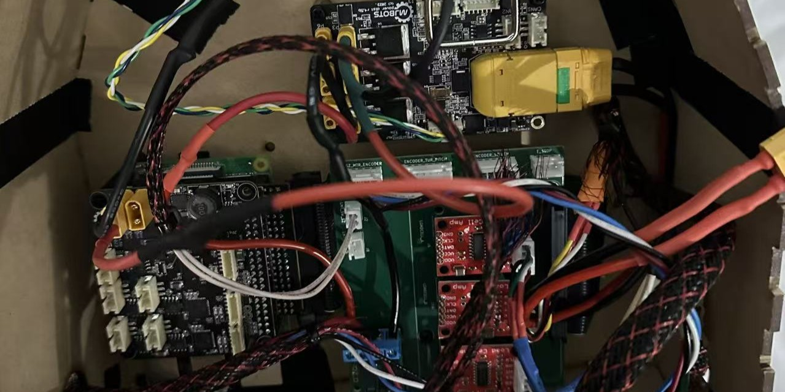
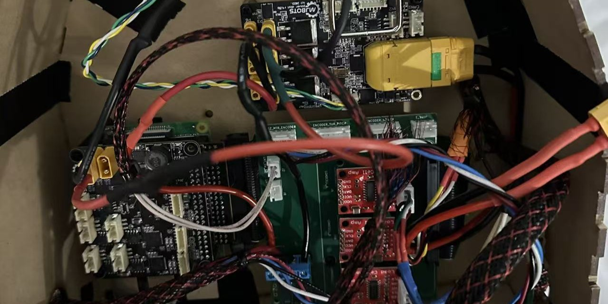
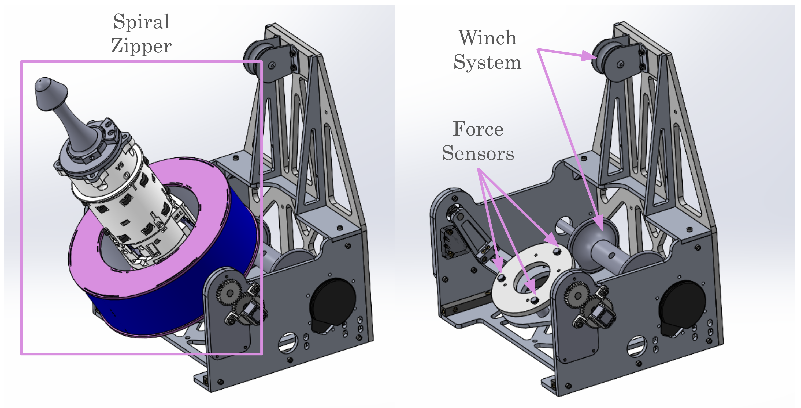
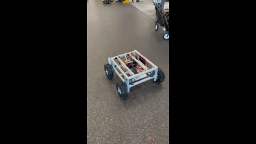
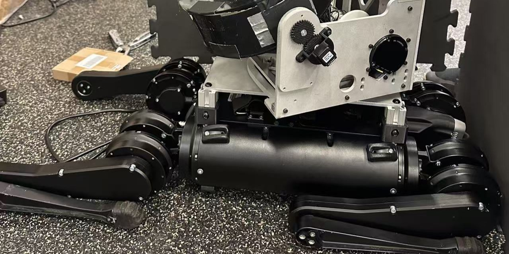
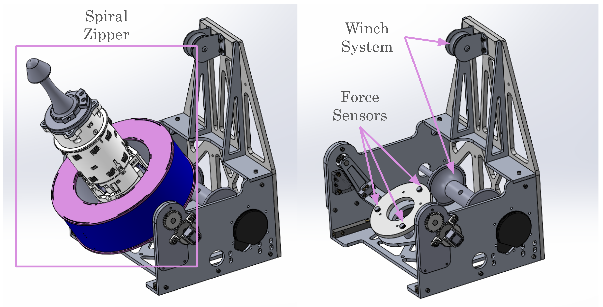
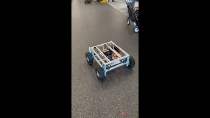
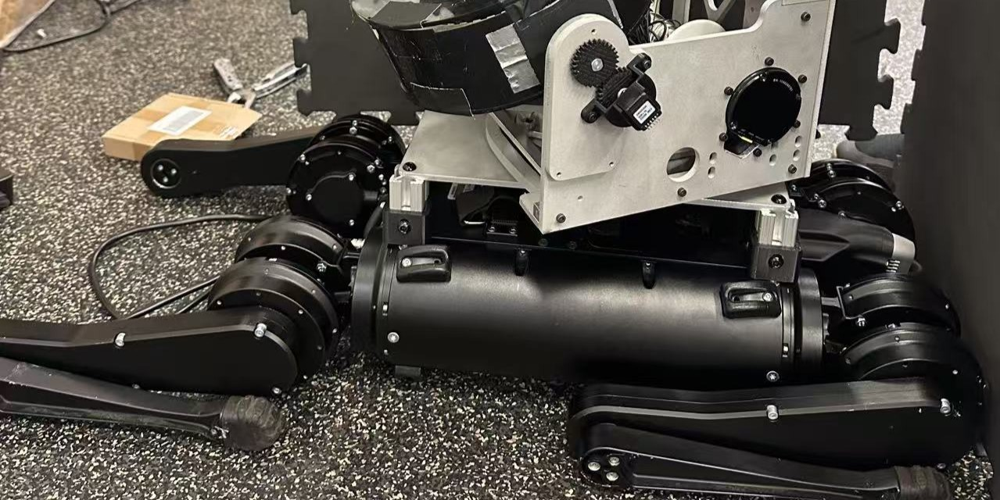

Project Overview
This project explores autonomous multi-robot cooperation for mobile truss construction and deployment. Our primary objective is to develop a system where modular robotic platforms can dock with each other and maintain structural and kinematic coordination while moving as a unified unit. Each rover is equipped with an onboard manipulator and turret-based docking system, allowing it to autonomously connect to other agents and payload modules. Once docked, the system can execute synchronized motion, enabling complex operations like relocating large truss structures or assembling components in harsh environments—such as extraterrestrial or remote terrestrial construction sites. The project leverages ROS 2, real-time multi-agent communication, and modular hardware/software architecture. Outdoor field tests demonstrate the feasibility of dynamic, locomotion-coupled cooperative behaviors, pushing the frontier of autonomous robotic construction.
 

 





My Contributions
- Actuation System Integration: Implemented and configured wheel-side actuators (motors), integrating them into the hardware architecture for mobility and docking.
- Sensor Feedback Loop: Collaborated on feedback control using wheel encoders and GPS, enabling closed-loop navigation via ROS 2 control stack.
- Docking System: Contributed to both the mechanical design and control logic for the docking module, ensuring smooth engagement and dynamic alignment with the docking station
- Turret System: Designed and assembled the electronics mounting system for the turret, and developed control routines using ROS 2 nodes for positioning and operation.
Technologies
Tools: ROS2 · C++ · Python · SolidWorks · 3D Printing · Sensors (IMU, GPS, Encoders)
Platform: Ubuntu 22.04 + ROS2 Node + Raspberry Pi4
What I Learned
This project taught me how to go beyond simulations and bring complex systems into the real world — where battery limits, uneven terrain, dust, and hardware failure are part of the challenge. I learned how to design for robustness, debug fast under pressure, and collaborate across both hardware and software teams.